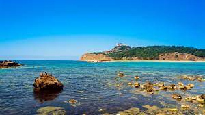

Les Villes les Plus Touristiques en Tunisie
La Tunisie regorge de villes fascinantes qui attirent des touristes du monde entier.
Tunis, la capitale historique, est un mélange d'histoire et de modernité. C'est une ville vivante, où l'on peut se perdre dans les ruelles de sa médina millénaire. Les souks colorés, les mosquées historiques et les cafés animés font de Tunis une destination incontournable pour les voyageurs en quête d'authenticité.
Sousse est une ville côtière animée, réputée pour ses magnifiques plages de sable fin. En plus de ses attraits balnéaires, Sousse offre également un riche patrimoine culturel, avec sa médina classée au patrimoine mondial de l'UNESCO. Les visiteurs peuvent explorer les vestiges romains, flâner dans les ruelles pittoresques et déguster la délicieuse cuisine locale.

Hammamet, surnommée la "Perle du Sahel", est une station balnéaire de renommée internationale. Ses plages de sable doré et ses eaux cristallines attirent les vacanciers en quête de détente et de soleil. Mais Hammamet offre également un riche patrimoine historique, avec ses fortifications médiévales, ses musées et ses festivals artistiques.
Tozeur est une oasis verdoyante nichée au cœur du désert tunisien. Connue pour ses palmeraies luxuriantes, ses maisons traditionnelles en briques de terre et ses ksour centenaires, la ville offre une expérience authentique et dépaysante. Les voyageurs peuvent explorer le désert environnant en dromadaire, visiter les studios de cinéma et découvrir les traditions locales.
Djerba est une île enchanteresse située au large des côtes tunisiennes. Connue pour ses plages de sable fin et ses eaux turquoise, Djerba est un paradis pour les amateurs de farniente et de sports nautiques. Mais l'île offre également un riche patrimoine culturel, avec ses villages traditionnels, ses souks animés et ses sites historiques.
Tabarka est une ville côtière pittoresque, nichée entre les montagnes et la mer Méditerranée. Célèbre pour ses plages préservées, ses criques isolées et ses eaux cristallines, Tabarka est un véritable havre de paix pour les amoureux de la nature.
